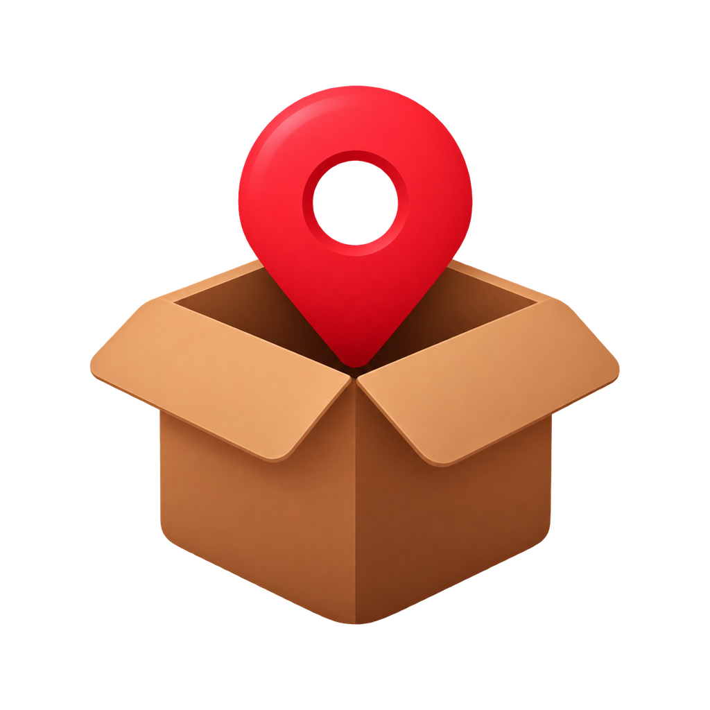

CatalocPhotograph a shelf. Name what is on it. Put a crate on that shelf and a box in the crate, as deep as reality goes. When you need the tent, search finds it and gives you the whole path — Garage → Steel shelving → Crate 1 — so you know where to walk.
iPhone, iPad and Android. Free for one household and 200 things.
Photograph the boxes as you pack them. Months later, search finds anything in seconds — including the eleven boxes you never unpacked.
A loft, a basement, a rented storage unit. Nest containers to any depth, and the breadcrumb tells you the full address of everything.
A pantry you can actually read, and best-before dates on one screen instead of a surprise at the back of a cupboard.
Mark what went where and to whom. One tab shows what is out and what is overdue. Nothing else in the app nags you.
Each home is its own catalogue, with its own search and history. Nothing bleeds between them.
For insurance, before you need to know. Photos, paths and values, exportable as one file you keep.
Containers inside containers, to any depth. The breadcrumb scrolls rather than truncating, so the whole address stays readable and every step is tappable.
Every box and every thing leads with its own picture, with pinch-to-zoom. Recognising a box by sight beats reading its name.
Photograph a whole shelf, drag a box around each thing and name them. Every one is saved with its own crop, so five new items look like five things.
Switch it on and Spotlight finds the drill without opening the app; ask Siri or your Android assistant where it is and you are told the shelf. Free, off until you ask for it, and nothing is uploaded.
QR code, short code and name on one sticker; scanning the QR opens that container. Each element switches off, so a box that leaves the house need not carry your address.
Send a shelf or a tag to a friend as a single web page, photos and all. It opens in any browser — no app, no account — and each thing can carry an “ask to borrow” button.
Pair two phones directly over your own Wi-Fi with a QR and a single-use code, or point every phone at a shared folder of your own. No account, and no Cataloc server, either way.
English, Português, Español, Français, Italiano, Русский, العربية, 日本語, 한국어 and 简体中文. Your own item names are never translated.
No account. No sign-up. No Cataloc server. No analytics, no advertising, no third-party SDK reporting on you. Your catalogue and your photos are files in the app's own storage. Export all of it, or erase all of it, in one tap.
Anything that leaves your phone leaves because you set it up: pairing with another phone on your Wi-Fi, or a shared folder you choose and control. Nothing of yours passes through the developer, ever.
One household and 200 containers and items are free, forever — and so is letting your phone's own search answer for you. PRO lifts both ceilings and adds marking several things on one photograph.